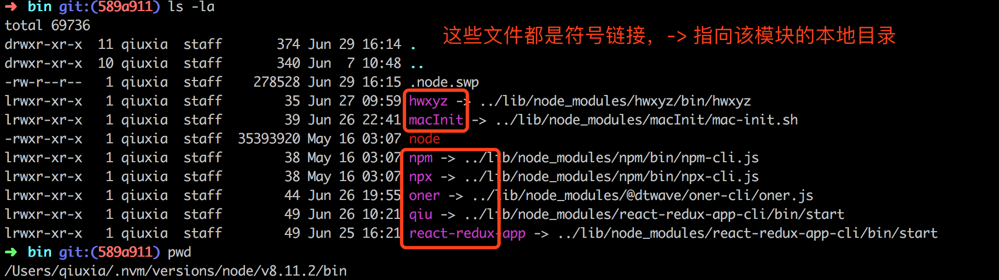

6. 本地调试
开发NPM模块时，我们希望可以边开发边调试。
Node规定，使用一个模块时，需要将其安装到全局的或项目的node_modules目录之中。对于开发中的模块，解决方法就是在全局的node_modules目录之中，生成一个符号链接，指向模块的本地目录。npm link就能起到这个作用，会自动建立这个符号链接。

如图，lrwxr-xr-x里的l是指link，指这个文件使符号链接文件
而红色的node是一个编译好的二进制可执行的文件(程序，系统CPU能读懂 vim打开是乱码)
使用命令后，模块的本地目录会新增一个package-lock.json文件
## 在全局的node_modules模块目录内，生成一个符号链接文件.在本地根目录下：
npm link
## 根据提示完成项目结构的初始化
react init